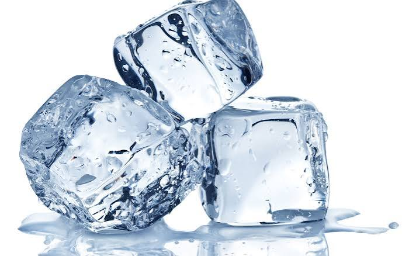

Home
Ice Cubes from Scratch

Materials and Ingredients
- Ice Cube Tray
- Freezer
- Purfied Water
Steps
- Ensure your ice cube tray is clean and ready for usage.
- Fill each section within the ice cube tray evenly with purified water
- Carefully place the tray filled with water into the freezer to allow to cool.
- After several hours of freezing, your tray full of ice cubes made directly from scratch should be finished